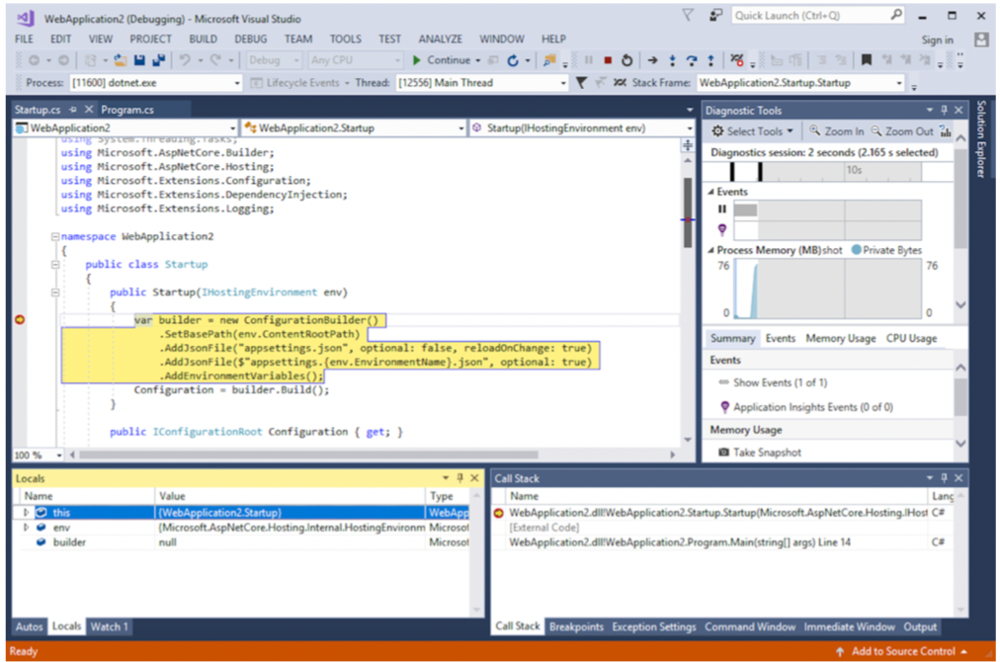
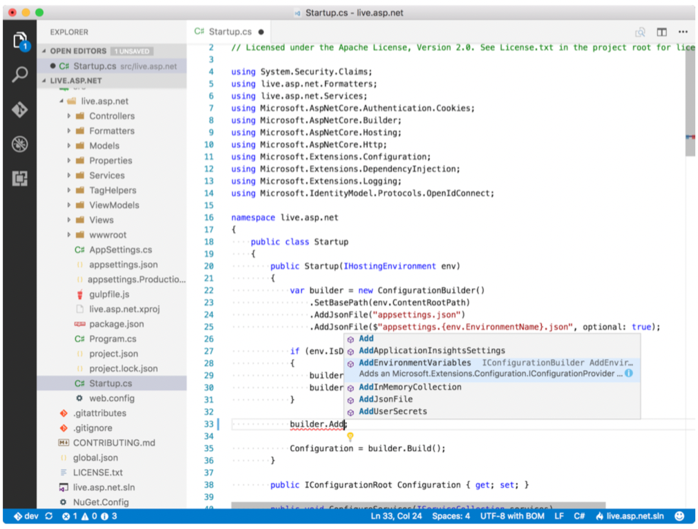

选择Windows，macOS或Linux进行开发，则可以部署到任何受支持的平台系统。
1.5.1 如果你是Windows用户
长期以来，Windows一直是构建.NET应用程序的最佳系统，而Visual Studio的可用性仍然如此。 Visual Studio（图1.9）是功能齐全的集成开发环境（IDE），它为开发ASP.NET Core应用程序提供了最佳的全方位体验之一。幸运的是，Visual Studio Community版现已免费提供给开源，学生和小型开发人员团队！ Visual Studio随附了用于构建新项目，调试和发布的大量模板，而无需触摸命令提示符。

Visual Studio为Windows用户提供了最完整的ASP.NET Core开发环境。
但是有时候，您不希望使用成熟的IDE。也许您想快速查看或编辑文件，或者您不喜欢Visual Studio有时无法预测的性能。在这种情况下，您可能只需要一个简单的编辑器，Visual Studio Code是一个不错的选择。 Visual Studio Code（图1.10）是一个开源的轻量级编辑器，可为包括C＃和ASP.NET Core在内的多种语言提供编辑，IntelliSense和调试功能。

Visual Studio Code提供了跨平台的IntelliSense和调试。
无论您安装Visual Studio还是其他编辑器（例如Visual Studio Code），都需要安装.NET Core工具才能开始构建ASP.NET Core应用。您可以从ASP.NET网站（https://get.asp.net）下载它，也可以在Visual Studio 2017安装期间选择.NET Core跨平台开发工作负载。
1.5.2 如果你是Linux或macOS用户
作为Linux或macOS用户，您有很多选择。 OmniSharp具有适用于大多数流行编辑器的插件，例如Vim，Emacs，Sublime，Atom和Brackets，更不用说跨平台的Visual Studio代码了。将合适的插件安装到自己喜欢的插件上，您将立即编写C＃。 同样，您需要从ASP.NET网站（https://get.asp.net）安装.NET Core SDK才能开始.NET Core和ASP.NET Core的开发。这将为您提供.NET Core运行时和.NET CLI，以开始构建ASP.NET Core应用程序。 .NET CLI包含您入门所需的一切，包括几个项目模板。默认情况下，您没有很多可供选择，但是您可以